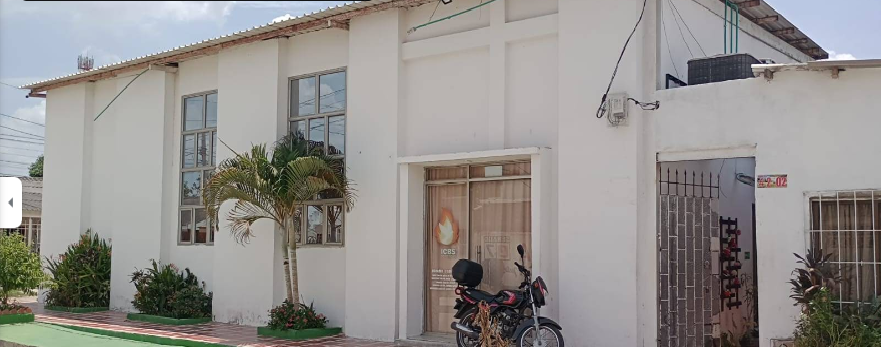

Una travesía de fe y amor
La Iglesia Bethel nació como respuesta a un llamado divino a ser luz en nuestra comunidad. Desde nuestros inicios, hemos caminado guiados por los principios bíblicos y el poder transformador del Espíritu Santo.
Bethel, que significa "Casa de Dios", representa nuestro compromiso de ser un refugio espiritual donde cada persona encuentra amor, aceptación y propósito en Cristo.
Hoy continuamos escribiendo esta historia con la misma pasión que nos impulsó desde el primer día, convencidos de que "el que comenzó en vosotros la buena obra, la perfeccionará hasta el día de Jesucristo" (Filipenses 1:6).
Pastora Principal
Nuestra pastora, la Señora Norys Ovalle, ha sido una guía espiritual incansable. Con años de experiencia en el ministerio, ha liderado proyectos comunitarios, programas de ayuda social y ha sido una voz de esperanza para quienes más lo necesitan.
Su visión y dedicación han sido fundamentales para el crecimiento de nuestra iglesia. Además, su compromiso con la comunidad y su amor por las personas han inspirado a muchos a seguir su ejemplo de servicio y fe.
Líder de Jóvenes y Psicóloga
Yolanda Padilla es nuestra líder de jóvenes y una figura clave en la Iglesia Bethel. Con años de experiencia en el ministerio, ha dedicado su vida a guiar y apoyar a los jóvenes en su camino espiritual.
Además de su labor en la iglesia, Yolanda es psicóloga y ha utilizado sus conocimientos para ayudar a muchas personas a superar desafíos emocionales y espirituales.
Si deseas apartar una cita con Yolanda para recibir orientación espiritual o psicológica:
Contactar por WhatsAppEn nuestra iglesia, encontrarás un espacio lleno de paz, amor y comunión. Ven y comparte con nosotros un momento de reflexión y espiritualidad. Nuestro equipo te espera con los brazos abiertos para que juntos celebremos la fe y crezcamos en comunidad.
Dirección: Cl. 11a #2-02, Sabanagrande

La iglesia es un lugar donde la comunidad se une para celebrar la fe y vivir el amor de Cristo. Nos encantaría que nos acompañaras en nuestras celebraciones y servicios. Juntos podemos ser una familia en Cristo.